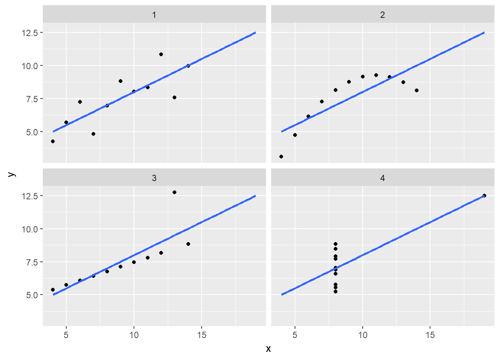

アンスコムのデータ例
はじめに
R によるデータハンドリングの有用性を実感してもらうためにアンスコム（anscombe）のデータ例を用いて説明します。なお、この説明の元資料は参考資料として最下段に示したあります。
なお、本ページでは標準パッケージ以外に以下の追加パッケージを用いています。
| Package | Version | Description |
|---|---|---|
| tidyverse | 1.2.1 | Easily Install and Load the ‘Tidyverse’ |
また、本ページでは以下のデータセットを用いています。
| Dataset | Package | Version | Description |
|---|---|---|---|
| anscombe | datasets | 3.4.4 | Anscombe’s Quartet of ‘Identical’ Simple Linear Regressions |
アンスコムのデータ例
アンスコムのデータ例はR の標準パッケージにanscombeデータセットとして格納されており、具体的には下表のような形式になっています。
anscombe
データは(x1, y1)、(x2, y2) …… で組になっており4組のデータ全ての平均値、分散、相関係数が下表のように（ほぼ）同じという性質を持っています。
ところが、散布図を描いてみるとデータの分布は4組全てが異なっており、一概に要約統計量だけで判断してはならないという非常に教訓に満ちたデータです。

データハンドリング
では、このアンスコムのデータ例を用いて実際に要約統計量とグラフを描いてみましょう。
anscombe
Tidy Data形式に変換する
アンスコムのデータ例は見てわかるように雑然（Messy）データ形式ですので、まず、これを整然（Tidy）データ形式に変換します。
列を識別できるようにする
anscombe %>%
tibble::rownames_to_column("id")
列をまとめる
次に列をまとめて座標軸をあらわすaxisと値をあらわすvalueに集約します。
anscombe %>%
tibble::rownames_to_column("id") %>%
tidyr::gather(key = axis, value, -id)
この時点で整然（Tidy）データのように見えますが、axisには二つの意味（座標軸とグループ）を持ったデータが格納されていますので、これらは分割する必要があります。
軸名を分割する
x1, x2, …, y3, y4という軸名を軸を表すaxisとグループをあらわすgroupに分割します。
anscombe %>%
tibble::rownames_to_column("id") %>%
tidyr::gather(key = axis, value, -id) %>%
tidyr::separate(axis, c("axis", "group"), 1)
この時点でもaxisには二つの意味（x軸とy軸）を持ったデータが格納されていますので、これらも分割する必要があります（x軸、y軸は因子の水準ではなく、それぞれ異なった意味を持つ変数と見なせます。一方、グループは4つの水準を持つ因子と見なすこと出来ますのでこちらを分割する必要はありません）。
座標軸を整理する
x軸とy軸が同じaxis列に集約されていますのでxとyという二つの列に分割します。
anscombe %>%
tibble::rownames_to_column("id") %>%
tidyr::gather(key = axis, value, -id) %>%
tidyr::separate(axis, c("axis", "group"), 1) %>%
tidyr::spread(axis, value)
不要列を削除する
最初に付加した列を識別するためのid列を削除して整然（Tidy）データの完成です。
anscombe %>%
tibble::rownames_to_column("id") %>%
tidyr::gather(key, value, -id) %>%
tidyr::separate(key, c("axis", "group"), 1) %>%
tidyr::spread(axis, value) %>%
dplyr::select(-id)